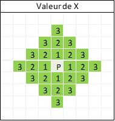
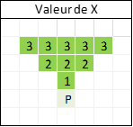
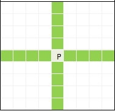
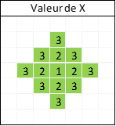

Il y a trois éléments à définir lors de la création d’un personnage
Une affinité élémentaire qui définit l'élément avec lequel le joueur aura une facilité.
En jeu, celui-ci recevra un modificateur* de +COIN* au DMG et aux soins si le sort qui les provoque est du même élément que son affinité. Il aura aussi un modificateur* de –COIN aux DMG reçus par un sort de l'élément avec lequel il a une affinité et +1 aux DMG reçus par un sort de l'élément avec lequel il est opposé
Une table de statistiques qui définit ses forces et faiblesses
Une classe qui définit les sorts et l'équipement qu'il peut utiliser
Les éléments
Le joueur qui veut créer son personnage commencera par définir l'affinité élémentaire de celui-ci avec 1D6
- s'il obtient un 1 ou un 4 son affinité est la terre et son opposé est le feu
- s'il obtient un 2 ou un 5 son affinité est le feu et son opposé est l'eau
- s'il obtient un 3 ou un 6 son affinité est l'eau et son opposé est la terre
Si le lanceur est de la même affinité élémentaire que la capacité qu'il tente d'utiliser celle-ci reçoit un bonus de +1 à son effet.
Par exemple "Antoine" (encore lui) lance une boule de feu.
- il réussit son jet de statistique
- Daprès la description de la capacité, elle fait 2D6 -2 DMG.
- Il fait son jet et obtient "4" et "3", le résultat de son jet vaut donc "7" auquel on soustrait 2 comme indiqué dans la description donc "5"
- Antoine est d'affinité élémentaire feu il ajoute donc +1 à son score de dégâts qui passe donc de "5" à "6"
- La boule de feu occasionnera donc 6 DMG
La Table Statistique
Ensuite il lancera 1D6 pour définir la valeur chaque statistique du personnage. Les statistiques du personnage sont au nombre de 5 :
- Force
- Chance
- Charisme
- Esprit
- Agilité
Le joueur personnage recevra une statistique de Constitution en fonction de sa Classe. En fonction de la valeur d'une statistique le personnage peut recevoir des modificateur*s à ses jets de cette statistique, comme défini dans la table des forces et faiblesses. Le modificateur* ne s'applique qu'à la statistique possédant le score.

Si le joueur n'est pas satisfait de son personnage il a une unique chance de relancer TOUTES les statistiques, mais sera obligé de garder le personnage ainsi obtenu quelque soit ses statistiques.
Le trait génie octroie une capacité passive au personnage
Génie de Spirituel
Vigilance : Le personange peut réagir aux attaques venant de dos.
Génie Charismatique
Second Souffle : Si une attaque fait tomber les Points de Vie à 0, il peut une fois par combat regagner 1D6 Points de Vie. Les fois suivantes il fera un jet de CHA-X, X étant le nombre de fois où il a utilisé Second souffle durant le combat.
Génie de la Force
Maîtrise de la Parade : -2DMG reçus à chaque attaque parée.
Si le joueur appartient à la classe gardien il renvoie 1D6 MDG CàC à chaque réussite critique de son jet de Parade
- Si le joueur n'appartient pas à la classe Gardien il acquiert la réactiobn Parade et un modificateur* de -2 à ses jets de Parade.
Génie Agile
Maîtrise de l'esquive : Le joueur se déplace d'une case dans la direction opposée à chaque esquive physique ou CàC, et sur une case adjascente pour les attaques à distance
- Si le joueur appartient à la classe Zélote, un cas de réussite vritique au jet d'esquive, le personnage ayant lancé l'attaque recule d'une case s'il se trouve sur une case adjascente à la case de départ du personnage esquivant.
- Il n'est pas possible d'éjecter un personnage du plateau, heurter le bord du plateau n'occasionne pas de dégats
- Si le joueur n'appartient pas à la classe Zélote il acquiert la réaction Esquive et un modificateur* de -2 à ses ejts d'Esquive.
Génie Chanceux
Lucky Star : Le joueur peut relancer 2 de ses jets au cour du combat.
III. Le Joueur Choisit la Classe de son Personnage
La description des différentes classes est disponible dans le grimoire. La classe du joueur lui applique un modificateur* sur chaque statistique. Le modificateur* ne modifie pas la statistique naturelle du joueur mais s'ajoute aux modificateur*s qu'il possède déja.
Les joueurs disposent chacun de 4 Emplacements de sorts. Ils peuvent choisir autant de sorts de leur classe qu'ils ont d'emplacements libres, tous éléments confondus, et un sort de leur élément appartenant à une autre classe. Ils ne peuvent pas apprendre de passifs, de réactions, ou de sorts neutres d'une autre classe. si un personnage veut apprendre un deuxième sort d'une autre classe, il lui en coutera deux emplacements de sorts.
IV. Sinon
Si le joueur le choisis, il peut décider lui-même de la répartition des points statistiques. Dans ce cas il devra répartir 14 points entre chacunes de ses caractéristiques, le nombre de points de chaque caractéristique doit être compris entre 1 et 6.
Anatomie d'un Sort
Prenons comme exemple ce sort :
Souffle incandescent
6 PV / Cone +3 / Cd 1
Le familier crache des flammes sur toutes les cibles à portée
- La première ligne indique le nom du sort
- La seconde indique les circonstances nécessaires à la lancée du sort
- La suite est une description des effets du sort
Concentrons-nous sur les circonstances.
La première information est toujours le coût du sort pour le lanceur. Un sort peut coûter des Points de Vie, des Points d'Action ou des Points de Mouvement. Dans tous les cas, le joueur ne peut utiliser ce sort que si le nombre de points qu'il lui reste dans la ressource est supérieur à 0. Une fois le sort utilisé, le nombre de points de ressource utilisés est soustrait au nombre de points restants au personnage.
La seconde information est la portée. Elle définit la distance à laquelle l'attaque peut être lancée. Les cases du plateau mesurent 1m² chacune
Le sort n'atteint que les personnages se trouvant sur une case adjacente à celle du lanceur
La valeur x indique la distance à laquelle la cible doit se trouver pour que le soit puisse l'atteindre. Si le nombre de cases (hors diagonale) séparant le lanceur de la cible est inférieur à x, il est à portée.

Le joueur frappe la case en face de lui, et les X cases suivantes + une case de chaque côté en plus de la zone de la ligne précédente.

Le sort peut toucher toute cible se trouvant dans la même ligne ou colonne sur la grille que le lanceur

La ligne de portée du sort s'étend sur tout le plateau
Le sort peut toucher toute cible se trouvant dans la même ligne ou colonne sur la grille que le lanceur tant qu'elle est à X case de distance

La troisième information, si présente, est relative au temps necessaire avant de relancer le sort
La valeur de X indique le nombre de tours avant que le sort puisse à noueau être utilisé
Dommage et aires d'impact
DMG :perte de PV que le sort inflige à toutes les cibles alliées ou ennemie se trouvant dans la zone d'impact.
DMG reçus : perte de PV du personnage causée par un sort ennemi ou allié s'il se trouvait dans sa zone d'impact
DMG auto-infligés : l'utilisation du sort inflige des dommages au lanceur à chaque utilisation
Si les DMG sont appliqués à une zone, ils sont notés comme suit 1 ; 2 ; 3 ; X, avec "1", "2", "3" et "X" représentant la position de la cible par rapport au lanceur, comme visible sur les schémas suivants. Tout personnage se trouvant dans la zone en vert lors de l’activation du sort recevra XDY DMG correspondant à sa position
Si nous reprenons l’exemple du souffle incandescent les dommages sont répartis comme suit ; 1D6 ; 1D6-1 ; D6-2. Les personnages se trouvant aux coordonnées 1 recevra 1D6 DMG, ceux aux coordonnées 2 1D6-1 DMG, et ceux aux cases 3 D6-2 DMG.
Ligne
AoE

Attention, contrairement à la portée, dans une AoE, la zone au centre de la zone d'effet vaut 1.
Cone
Dommages et aires d'impact
Les attaques portées dans le dos reçoivent un bonus de +2 DMG Sur les schémas suivant le joueur est représenté par la flèche et l’on considère qu’il est tourné vers la droite. Les attaques venant de la zone verte sont considérées comme venant de face, celles de la zone rouge, de dos.